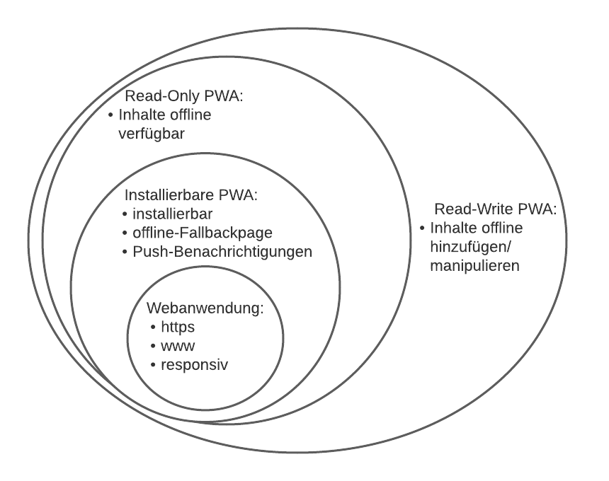

Diese Webseite enthält einen Wizard, der Progressive Web Apps (PWAs) erläutert, deren Bestandteile erklärt
und bei der eigenen Umsetzung unterstützt.
Progressive Web Apps sind eine im Jahr 2015 von Frances Berriman und Alex Russel entwickelte
Technologie, die mittlerweile von so gut wie allen modernen Webbrowsern,
allen voran Google Chrome, unterstützt wird.
PWAs kombinieren die Vorteile von nativen Apps und Webanwendungen und das sowohl auf dem Smartphone, als
auch auf jedem anderen Endgerät, das moderne Webbrowser unterstützt.
Eine PWA ist also eine Webanwendung, die in einem Browser aufgerufen wird, jedoch in einigen Punkten
einer nativen App ähnelt.
Somit ist eine PWA plattformunabhängig und vereint die Vorteile von Desktop-Anwendungen und Mobile-Anwendungen.
Mit Hilfe der Plattformunabhängigkeit ist durch eine PWA also eine einzige Codebasis ausreichend, um
alle Betriebssysteme abzudecken.
Ähnlichkeiten bei PWA und nativer App sollen jedoch nicht nur im Design und in der Handhabung, sondern auch
in den Funktionen liegen.
Nachdem eine Progressive Web App zum ersten Mal besucht wurde, kann diese, je nach Ausführung, komplett offline
funktionieren und die Ladezeiten sowie die Perfomance deutlich verbessern.
Eine weitere Übereinstimmung bei PWAs und nativen Apps ist das Icon, das dem Homebildschirm des
Endgeräts hinzugefügt werden kann.
Aber auch auf die Ressourcen des Geräts kann durch moderne Web-APIs Zugriff gegeben werden, um somit ein
App-gleiches Erlebnis zu gewährleisten.
Durch das Speichern von Ressourcen im Cache haben PWAs ein sehr schnelles Antwortverhalten.
Des Weiteren lassen diese sich, wie eine native App, intuitiv bedienen und schonen den Speicher des
Endgeräts, da sie meistens weniger als 1mb an Größe haben.
Für die Zwecke dieses Wizards werden Progressive Web Apps in 3 verschiedene Ausführungen unterteilt.
Das liegt daran, dass die verschiedenen PWAs sich in der Komplexität der Umsetzung stark unterscheiden
und es nicht immer unbedingt notwendig ist, für jeden Zweck alle Funktionen umzusetzen.

Ausführungen von PWAs
Grundlegende Webanwendung
HTTPS
Responsiv
WWW
Die grundlegende Webanwendung stellt die Inhalte sowie die Funktionen zur Verfügung, auf denen die
verschiedenen PWAs aufbauen.
Das Beispiel, aus dem viele Ausschnitte im Laufe des Wizards verwendet werden, wird im Kapitel
"Beispiel" erläutert.
Dabei geht es um den Aufbau der Webseite, die dahinterstehende Datenbank und die Funktionsweise des
MVC-Pattern von CodeIgniter 4.
Installierbare PWA
Installierbar
Offline-Fallbackpage
Push-Benachrichtigungen
Die installierbare Progressive Web App ist installierbar, das bedeutet, dass der Nutzer
bei Bedarf ein Icon zum Homebildschirm hinzufügen kann.
Darüber hinaus speichert sie die Assets einer Fallbackpage im Cache ab.
Diese Fallbackpage wird angezeigt, wenn keine Verbindung zum Internet besteht.
Des Weiteren wird die Verwendung einer Web-API dargestellt.
Read-Only PWA
Partielle Offline-Verfügbarkeit
Die Read-Only PWA stellt dem Benutzer alle statischen und dynamischen Inhalte offline zur Verfügung.
Das bedeutet, dass der Nutzer weiterhin alle Inhalte offline einsehen, jedoch nicht manipulieren kann.
Read-Write PWA
Vollständige Offline-Verfügbarkeit
Die Read-Write PWA macht die Web-App komplett offline verfügbar. Das bedeutet, dass offline Änderungen
hinzufügt werden können, die dann bei der nächsten Verbindung mit dem Internet zur Online-Datenbank hinzugefügt werden.